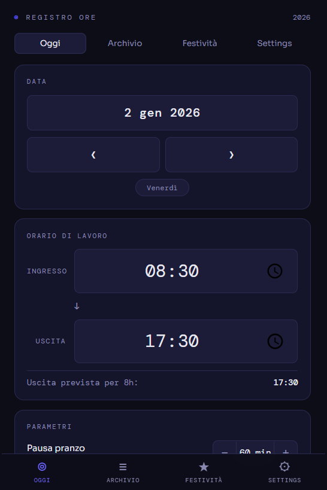

2026
Registro ore
Una breve descrizione: cosa hai fatto, qual era l'obiettivo, perché conta. Massimo due o tre righe.
Approfondisci →Dalla Ricerca e Sviluppo all'assistenza IT: progetto l’affidabilità, certifico l’eccellenza e sviluppo soluzioni digitali per trasformare ogni sfida tecnica in un processo che funziona.
Ciao! Sono Davide Brogna, un tecnico con le radici in Sicilia e il cuore operativo sulle sponde del Lago di Garda. Oggi mi definisco un risolutore di problemi a 360 gradi: nella mia quotidianità mi muovo tra la precisione della Ricerca e Sviluppo e la dinamicità del supporto IT, con l'obiettivo costante di rendere i processi aziendali più fluidi, intelligenti e affidabili. Non mi accontento che le cose "funzionino"; punto a diventare il riferimento tecnico capace di trasformare una criticità in un’opportunità di miglioramento.
Il mio percorso parte da una solida base come Perito Meccanico e Tecnico delle Rinnovabili, ma è la versatilità la mia vera firma. Se negli anni come Store Manager ho imparato a gestire lo stress e il rapporto con le persone, oggi in Stagnoli TG fondo queste doti relazionali con competenze tecniche avanzate, che vanno dalla certificazione di prodotto alla gestione di infrastrutture IT complesse. Cosa mi rende diverso? La mia curiosità non finisce quando stacco dal lavoro: se vedo un'inefficienza, creo una soluzione, che sia sviluppare da zero una Web App per gestire i miei orari o dedicarmi alla manutenzione meccanica e ai lavori manuali con la stessa precisione che metto in ufficio. Sono un mix di visione digitale e manualità artigiana, sempre pronto alla prossima sfida.
Il mio CV è disponibile in formato PDF: puoi visualizzarlo nel browser oppure scaricarlo direttamente.

Una breve descrizione: cosa hai fatto, qual era l'obiettivo, perché conta. Massimo due o tre righe.
Approfondisci →Per proposte, domande o anche solo un saluto.
davidebro92@gmail.com